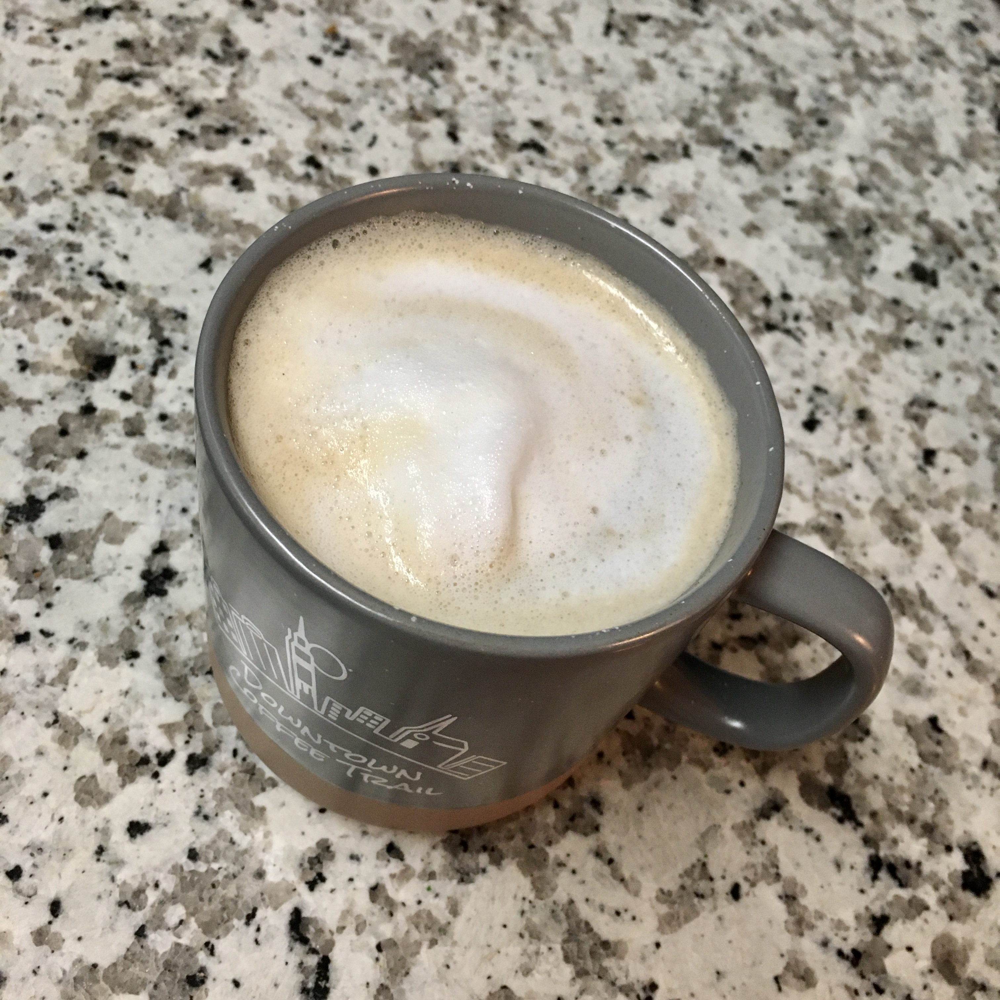

aeropress
stumptown coffee roasters
colombia, el jordan
20g coffee, 200g water, 150g milk
1+0 on lido e-t
water at 200 deg f
aeropress cappuccino
inverted method
48g bloom for 45s
at 45s, pour to 200g
invert over mug and press for 30s
warm and froth 150g milk in mason jar
add milk and spoon froth into aeropress shot
1m 45s total brew time
overall impressions: this one was really really good
seems like i'm getting closer to the right ratio, texture was a little off
eight and a half stars out of ten
